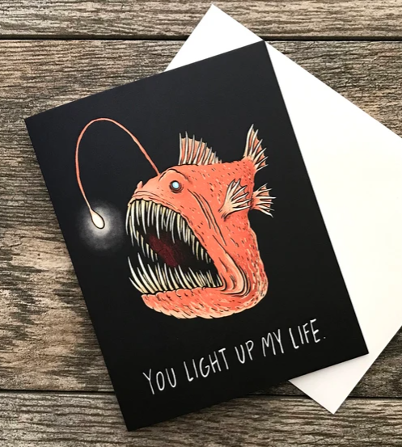

February 2023 Goals
SAFS
monthly goals
Monthly Goals
- Review the Population Dynamics section of the Punt Student reading list
- Prepare the second draft of the Proposal Presentation for my General Exam
- Write code to implement a linear ramp for the phasing in harvest control rule for Ch. 1
Daily Snapshots
15 February 2023
- ran 1 simulation using status quo harvest control rule, run 1 simulation using phase-in HCR
- created table in Excel comparing the ABCs for each harvest control rule
- total catch should be the same
- how that total catch is distributed should change–did the catch linearly increase or decrease when using phase-in? If yes, good!
- discovered a new question/problem for tomorrow: what is the best way to simulate the ABC from the last management period…for the first simulated management period.
- tomorrow, I’ll just have a status quo assessment go first and then have the phase-in HCR turn on for the next assessment.
- tackled so many email demons today (so many)
14 February 2023
- participated in weekly accountability group writing/coding session (Chapter 1)
- revised Ch. 1 phase-in harvest control rule protocol for implementation into ratpackmse software
- implemented new protocol into ratpackmse
Happy Valentine’s Day

Image from an Etsy Shop, no affiliation
13 February 2023
- travel day (~3 hours waiting for a gate at SEATAC, what a time to be alive)
- studied for General Exam (Population Dynamics section)
- added Masters research summary pages to personal website
- added Towards best practices in selex paper to personal website
10 February 2023
- met with weekly accountability group to conduct a retrospective for this week’s work and to establish priorities for next week’s work
- created a quarto version of my personal website
- created a research notebook section of the website
- inspired by Steven Roberts’s lab practices (particularly the work of Chris Mantegna and Sarah Tanja)